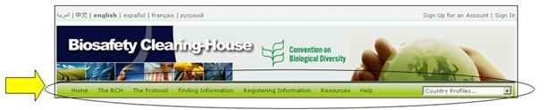

Above the welcome area of the Home page is a navigation bar that provides links to the major components of the BCH.
Figure 7
The BCH section provides links to information about the BCH, its development and management, highlights and policies.
The Protocol section provides links to the text of the Protocol, a list of Parties to the Protocol, COP-MOP Decisions, information about official reports, meetings documents and Notifications. The Finding Information section provides links to search interfaces for the different categories of information in the BCH databases and to compiled information (i.e. National Contacts, the LMOs Registry, the Parental Organisms Registry and the Gene Registry).
The Registering Information section links the user to the sign in page for the Management Centre through which BCH users can create and manage their information.
The Resources section provides access to other useful site resources such as (i) the Common Formats used in the BCH, (ii) the Glossary, (iii) the Thesaurus; (iv) a page describing the solutions for National Participation (Hermes and the BCH Ajax Plug-In), (v) the available Mailing Lists, (vi) a list of downloadable files and (vii) the Site map.
The Help section provides access to (i) Frequently Asked Questions (FAQ), (ii) BCH Training Modules, (iii) Guide to the BCH, (iv) Training Site of the BCH and (v) Interoperability Services. On the right side of the navigation bar is a search box for locating country profiles. This provides a quick search function to locate all records for each country listed.
The menus on the BCH Central Portal use icons to illustrate aspects of the associated links. The commonly encountered menu icons include:
 Link takes the user to another website
Link takes the user to another website
 Link to a PDF document
Link to a PDF document
 Link takes the user to a search facility on another website
Link takes the user to a search facility on another website
Details of more icons used on the BCH Central Portal are provided in the Ready Reference 4 guide available on the Training Site of the BCH (https://bchtraining.cbd.int/member/training-signin.aspx?returnurl=%2fdefault.shtml).